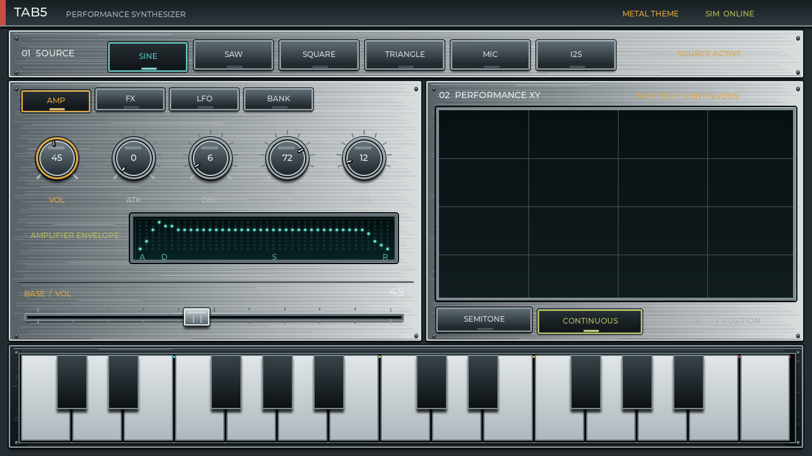
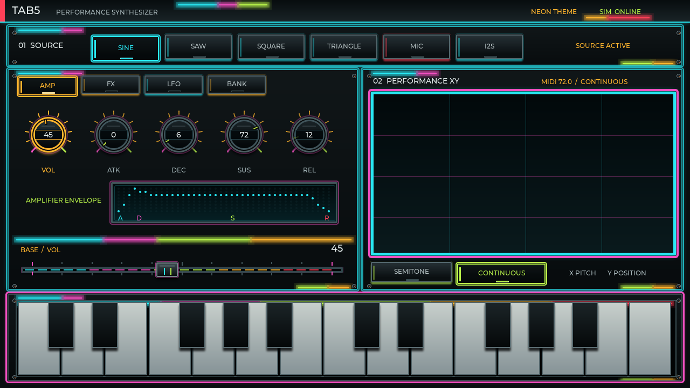

Choose a source
Tap SINE or SAW. Saw is bright and harmonically rich, making it a strong starting point for leads and pads.
M5Stack Tab5 · Performance Synthesizer
Tab5 Synth combines oscillators, microphone sampling, external I2S input, an ADSR envelope, four effects, per-parameter LFOs, presets, an XY pad, and a touch keyboard in one 8-voice instrument.
The core workflow is simple: select a target, change it with the bottom fader, then play with the keyboard or XY pad.
Tap SINE or SAW. Saw is bright and harmonically rich, making it a strong starting point for leads and pads.
Open AMP, select VOL, and raise the horizontal value fader.
Adjust ATK / DEC / SUS / REL. The envelope display follows your settings.
Touch the keyboard. On the XY pad, X controls pitch and Y provides performance position.
The interface has three visual skins. Changing skin affects appearance only; sound parameters, effects, LFO settings, and currently held state remain unchanged.

The default skin, with walnut, brass, and warm cream-colored keys.

A studio-hardware look using brushed metal, silver edging, and dark control surfaces.

A neon digital look using cyan, magenta, lime accents, and a glowing grid.
Tap TAB5 / PERFORMANCE SYNTHESIZER at the upper left, or tap the 01 SOURCE title area.
Each tap advances WOOD → METAL → NEON → WOOD.
The top status line shows WOOD THEME, METAL THEME, or NEON THEME.
Startup skin: the current implementation starts in Retro Wood. Skin choice is not stored in M1–M5.
The top row chooses what produces the raw sound. The “sing” source mentioned informally is labeled SINE in the UI. Four oscillator waves are joined by microphone sampling and digital I2S input.
Pure and rounded. Good for sub bass, flute-like tones, and soft leads.
Bright and rich in harmonics. Good for strings, brass, bass, and bold leads.
Hollow and electronic. Useful for 8-bit tones, basses, and reed-like sounds.
Gentle, with slightly more harmonics than sine. Useful for bells and soft bass.
Records while held and commits on release. Holds under one second are discarded; maximum length is five seconds.
Receives an external digital audio source. The current input rate is 16 kHz.
MIC workflow: hold MIC for at least one second while making a sound, then release. MIC READY / SAMPLED / READY means the sample can be played. The web simulator demonstrates the UI; actual recording and audio output require Tab5 hardware.
AMP controls overall level and how the volume changes from key-down to key-up. Select a knob, then use the shared 0–100 fader at the bottom of the editor.

Examples: for a percussive PLK sound, use a fast ATK, short DEC, and low SUS. For a PAD, increase ATK and REL for a slow entrance and long tail.
An effect name button both selects the effect and toggles it on or off. Parameters remain editable while bypassed. The three central knobs always belong to the selected effect.

An LFO moves a selected control automatically with a slow waveform. All 17 AMP and FX targets keep their own Rate, Depth, Wave, and on/off state.

On AMP or FX, select the parameter you want to move—for example VOL or DELAY TIME.
Switch to LFO and confirm that the TARGET label names the intended control.
RAT sets speed and DEP sets range. Choose SINE, TRIANGLE, SQUARE, or RND.
Tap LFO ON. Choosing another target recalls that target’s independent settings.
| Wave | Motion | Typical use |
|---|---|---|
| SINE | Rounded, smooth cycle | Vibrato and gentle volume movement |
| TRIANGLE | Linear rise and fall | Steady mechanical sweeps |
| SQUARE | Instant switch between two values | Tremolo and rhythmic gating |
| RND | Random changes | Unstable motion and experimental texture |
Color language: amber controls edit the normal BASE value; cyan controls edit LFO settings. On the LFO page, the shared fader changes the selected LFO field, not the target’s base value.
Eleven presets provide starting sounds. M1–M5 are working-memory slots that retain your complete editing state as you move between them.

| Buttons | Meaning | Character |
|---|---|---|
| GTR / PNO / ORG / REC | Guitar / Piano / Organ / Recorder | Strings, keys, organ, and flute-like starts |
| PAD / PLK / BEL | Pad / Pluck / Bell | Sustained, short plucked, and bell sounds |
| BRS / BAS / SYN | Brass / Bass / Synth | Brass, low-end, and assertive synth sounds |
| RND | Random | An experimental combination of source, values, and effects |
| M1–M5 | Memory slots | The slot you leave is saved before the destination is loaded |
Both the XY pad and the two-octave touch keyboard can trigger notes. Sliding gestures are supported.
The X axis covers MIDI 48–96. SEMITONE quantizes to chromatic notes; CONTINUOUS allows smooth pitch. The Y axis is forwarded as performance position for expressive use.
Play white and black keys directly. Sliding releases the previous note and triggers the next. Up to eight voices allow chords.
This is not a mock-up. It is the simulator built from the repository’s portable LVGL UI source. It is silent, but every source button, page, knob, fader, and key can be tried.
Drag knobs, and tap or drag the bottom value fader. Verify MIC, I2S, and actual audio behavior on Tab5 hardware.